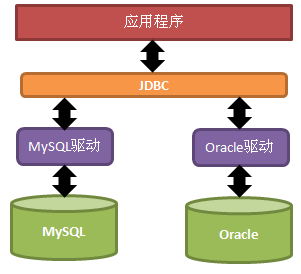
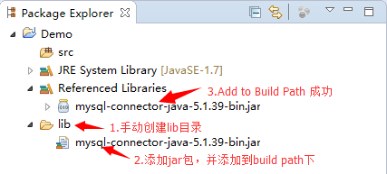

JDBC（Java Data Base Connectivity,java数据库连接）是一种用于执行SQL语句的Java API，可以为多种关系数据库提供统一访问，它由一组用Java语言编写的类和接口组成。是Java访问数据库的标准规范
JDBC提供了一种基准,据此可以构建更高级的工具和接口，使数据库开发人员能够编写数据库应用程序。
JDBC需要连接驱动，驱动是两个设备要进行通信，满足一定通信数据格式，数据格式由设备提供商规定，设备提供商为设备提供驱动软件，通过软件可以与该设备进行通信。
今天我们使用的是mysql的驱动mysql-connector-java-5.1.39-bin.jar
Java提供访问数据库规范称为JDBC，而生产厂商提供规范的实现类称为驱动。

JDBC是接口，驱动是接口的实现，没有驱动将无法完成数据库连接，从而不能操作数据库！每个数据库厂商都需要提供自己的驱动，用来连接自己公司的数据库，也就是说驱动一般都由数据库生成厂商提供。
昨天我们学习了sql语句的使用，并创建的分类表sort，今天我们将使用JDBC对分类表进行增删改查操作。
#创建数据库
create database day22_JDBC;
#使用数据库
use day22_JDBC;
###创建分类表
create table sort(
sid int PRIMARY KEY ,
sname varchar(100)
);
#初始化数据
insert into sort(sname) values('家电');
insert into sort(sname) values('服饰');
insert into sort(sname) values('化妆品');创建lib目录，用于存放当前项目需要的所有jar包
选择jar包，右键执行build path / Add to Build Path

代码：Class.forName("com.mysql.jdbc.Driver");JDBC规范定义驱动接口：java.sql.Driver，MySql驱动包提供了实现类：com.mysql.jdbc.Driver
DriverManager工具类，提供注册驱动的方法 registerDriver()，方法的参数是java.sql.Driver，所以我们可以通过如下语句进行注册:
DriverManager.registerDriver(new com.mysql.jdbc.Driver());
以上代码不推荐使用，存在两方面不足
通常开发我们使用Class.forName() 加载一个使用字符串描述的驱动类。
如果使用Class.forName()将类加载到内存，该类的静态代码将自动执行。
通过查询com.mysql.jdbc.Driver源码，我们发现Driver类“主动”将自己进行注册
public class Driver extends NonRegisteringDriver implements java.sql.Driver {
static {
try {
java.sql.DriverManager.registerDriver(new Driver());
} catch (SQLException E) {
throw new RuntimeException("Can't register driver!");
}
}
……
}代码：Connection con = DriverManager.getConnection
(“jdbc:mysql://localhost:3306/mydb”,”root”,”root”);获取连接需要方法 DriverManager.getConnection(url,username,password)，三个参数分别表示，url 需要连接数据库的位置（网址） user用户名 password 密码
url比较复杂，下面是mysql的url：
jdbc:mysql://localhost:3306/mydb
JDBC规定url的格式由三部分组成，每个部分中间使用冒号分隔。
第一部分是jdbc，这是固定的；
第二部分是数据库名称，那么连接mysql数据库，第二部分当然是mysql了；
第三部分是由数据库厂商规定的，我们需要了解每个数据库厂商的要求，mysql的第三部分分别由数据库服务器的IP地址（localhost）、端口号（3306），以及DATABASE名称(mydb)组成。String sql = "某SQL语句";
获取Statement语句执行平台：Statement stmt = con.createStatement();常用方法：
int executeUpdate(String sql); --执行insert update delete语句.
ResultSet executeQuery(String sql); --执行select语句.
boolean execute(String sql); --执行select返回true 执行其他的语句返回false.
ResultSet实际上就是一张二维的表格，我们可以调用其boolean next()方法指向某行记录，当第一次调用next()方法时，便指向第一行记录的位置，这时就可以使用ResultSet提供的getXXX(int col)方法(与索引从0开始不同个，列从1开始)来获取指定列的数据：
rs.next();//指向第一行
rs.getInt(1);//获取第一行第一列的数据常用方法：
Object getObject(int index) / Object getObject(String name) 获得任意对象
String getString(int index) / Object getObject(String name) 获得字符串
int getInt(int index) / Object getObject(String name) 获得整形
double getDouble(int index) / Object getObject(String name) 获得双精度浮点型
与IO流一样，使用后的东西都需要关闭！关闭的顺序是先得到的后关闭，后得到的先关闭。
rs.close();
stmt.close();
con.close();假设有登录案例SQL语句如下:
SELECT * FROM 用户表 WHERE NAME = 用户输入的用户名 AND PASSWORD = 用户输的密码;此时，当用户输入正确的账号与密码后，查询到了信息则让用户登录。但是当用户输入的账号为XXX 密码为：XXX’ OR ‘a’=’a时，则真正执行的代码变为：
SELECT * FROM 用户表 WHERE NAME = ‘XXX’ AND PASSWORD =’ XXX’ OR ’a’=’a’;此时，上述查询语句时永远可以查询出结果的。那么用户就直接登录成功了，显然我们不希望看到这样的结果，这便是SQL注入问题。
为此，我们使用PreparedStatement来解决对应的问题。
使用PreparedStatement预处理对象时，建议每条sql语句所有的实际参数，都使用逗号分隔。
String sql = "insert into sort(sid,sname) values(?,?)";;
PreparedStatement预处理对象代码：
PreparedStatement psmt = conn.prepareStatement(sql)
常用方法：
1.执行SQL语句:
int executeUpdate(); --执行insert update delete语句.
ResultSet executeQuery(); --执行select语句.
boolea execute(); --执行select返回true 执行其他的语句返回false.
2.设置实际参数
void setXxx(int index, Xxx xx) 将指定参数设置为给定Java的xx值。在将此值发送到数据库时，驱动程序将它转换成一个 SQL Xxx类型值。
例如：
setString(2, "家用电器") 把SQL语句中第2个位置的占位符？ 替换成实际参数 "家用电器"
通过预处理对象的executeUpdate方法，完成记录的insert\update\delete语句的执行。操作格式统一如下：
1. 注册驱动
2. 获取连接
3. 获取预处理对象
4. SQL语句占位符设置实际参数
5. 执行SQL语句
6. 释放资源
实现向分类表中插入指定的新分类
public void demo01() throws Exception {
// 1注册驱动
Class.forName("com.mysql.jdbc.Driver");
// 2获取连接
Connection conn = DriverManager.getConnection("jdbc:mysql://localhost:3306/mydb", "root", "root");
// 3获得预处理对象
String sql = "insert into sort(sname) values(?)";
PreparedStatement stat = conn.prepareStatement(sql);
// 4 SQL语句占位符设置实际参数
stat.setString(1, "奢侈品");
// 5执行SQL语句
int line = stat.executeUpdate();
System.out.println("新添加记录数：" + line);
// 6释放资源
stat.close();
conn.close();
}
实现更新分类表中指定分类ID所对应记录的分类名称
public void demo02() throws Exception {
// 1注册驱动
Class.forName("com.mysql.jdbc.Driver");
// 2获取连接
Connection conn = DriverManager.getConnection("jdbc:mysql://localhost:3306/mydb", "root", "root");
// 3获得预处理对象中
String sql = "update sort set sname=? where sid=?";
PreparedStatement stat = conn.prepareStatement(sql);
// 4 SQL语句占位符设置实际参数
stat.setString(1, "数码产品");
stat.setInt(2, 1);
// 5执行SQL语句
int line = stat.executeUpdate();
System.out.println("更新记录数：" + line);
// 6释放资源
stat.close();
conn.close();
}
实现删除分类表中指定分类ID的记录
public void demo03() throws Exception {
// 1注册驱动
Class.forName("com.mysql.jdbc.Driver");
// 2获取连接
Connection conn = DriverManager.getConnection("jdbc:mysql://localhost:3306/mydb", "root", "root");
// 3获得预处理对象
String sql = "delete from sort where sid=?";
PreparedStatement stat = conn.prepareStatement(sql);
// 4 SQL语句占位符设置实际参数
stat.setInt(1, 1);
// 5执行SQL语句
int line = stat.executeUpdate();
System.out.println("删除记录数：" + line);
// 6释放资源
stat.close();
conn.close();
}
通过预处理对象的executeQuery方法，完成记录的select语句的执行。操作格式统一如下：
1. 注册驱动
2. 获取连接
3. 获取预处理对象
4. SQL语句占位符设置实际参数
5. 执行SQL语句
6. 处理结果集(遍历结果集合)
7. 释放资源
实现查询分类表所有记录
public void demo04() throws Exception {
// 1注册驱动
Class.forName("com.mysql.jdbc.Driver");
// 2获取连接
Connection conn = DriverManager.getConnection("jdbc:mysql://localhost:3306/mydb", "root", "root");
// 3获得预处理对象
String sql = "select * from sort";
PreparedStatement stat = conn.prepareStatement(sql);
// 4 SQL语句占位符设置实际参数
// 5执行SQL语句
ResultSet rs = stat.executeQuery();
// 6处理结果集(遍历结果集合)
while( rs.next() ){
//获取当前行的分类ID
String sid = rs.getString("sid");//方法参数为数据库表中的列名
//获取当前行的分类名称
String sname = rs.getString("sname");
//显示数据
System.out.println(sid+"-----"+sname);
}
// 7释放资源
rs.close();
stat.close();
conn.close();
}
实现查询分类表中指定分类名称的记录
public void demo05() throws Exception {
// 1注册驱动
Class.forName("com.mysql.jdbc.Driver");
// 2获取连接
Connection conn = DriverManager.getConnection("jdbc:mysql://localhost:3306/mydb", "root", "root");
// 3获得预处理对象
String sql = "select * from sort where sname=?";
PreparedStatement stat = conn.prepareStatement(sql);
// 4 SQL语句占位符设置实际参数
stat.setString(1, "奢侈品");
// 5执行SQL语句
ResultSet rs = stat.executeQuery();
// 6处理结果集(遍历结果集合)
while( rs.next() ){
//获取当前行的分类ID
String sid = rs.getString("sid");//方法参数为数据库表中的列名
//获取当前行的分类名称
String sname = rs.getString("sname");
//显示数据
System.out.println(sid+"-----"+sname);
}
// 7释放资源
rs.close();
stat.close();
conn.close();
}
“获得数据库连接”操作，将在以后的增删改查所有功能中都存在，可以封装工具类JDBCUtils。提供获取连接对象的方法，从而达到代码的重复利用。
该工具类提供方法：public static Connection getConn ()。代码如下：
/*
* JDBC工具类
*/
public class JDBCUtils {
public static final String DRIVERNAME = "com.mysql.jdbc.Driver";
public static final String URL = "jdbc:mysql://localhost:3306/mydb";
public static final String USER = "root";
public static final String PASSWORD = "root";
static {
try {
Class.forName(DRIVERNAME);
} catch (ClassNotFoundException e) {
System.out.println("数据库驱动注册失败！");
}
}
//提供获取连接的方法
public static Connection getConn() throws Exception {
// 2. 获得连接
Connection conn = DriverManager.getConnection(URL, USER, PASSWORD);
// 返回连接
return conn;
}
}
开发中获得连接的4个参数（驱动、URL、用户名、密码）通常都存在配置文件中，方便后期维护，程序如果需要更换数据库，只需要修改配置文件即可。
通常情况下，我们习惯使用properties文件，此文件我们将做如下要求：
1. 文件位置：任意，建议src下
2. 文件名称：任意，扩展名为properties
3. 文件内容：一行一组数据，格式是“key=value”.
a) key命名自定义，如果是多个单词，习惯使用点分隔。例如：jdbc.driver
b) value值不支持中文，如果需要使用非英文字符，将进行unicode转换。
在项目跟目录下，创建文件，输入“db.properties”文件名。
文件中的内容
driver=com.mysql.jdbc.Driver
url=jdbc:mysql://localhost:3306/mydb
user=root
password=root对应properties文件处理，开发中也使用Properties对象进行。我们将采用加载properties文件获得流，然后使用Properties对象进行处理。
JDBCUtils.java中编写代码
public class JDBCUtils {
private static String driver;
private static String url;
private static String user;
private static String password;
// 静态代码块
static {
try {
// 1 使用Properties处理流
// 使用load()方法加载指定的流
Properties props = new Properties();
Reader is = new FileReader("db.properties");
props.load(is);
// 2 使用getProperty(key)，通过key获得需要的值，
driver = props.getProperty("driver");
url = props.getProperty("url");
user = props.getProperty("user");
password = props.getProperty("password");
} catch (Exception e) {
throw new RuntimeException(e);
}
}
/**
* 获得连接
*/
public static Connection getConnection() {
try {
// 1 注册驱动
Class.forName(driver);
// 2 获得连接
Connection conn = DriverManager.getConnection(url, user, password);
return conn;
} catch (Exception e) {
throw new RuntimeException(e);
}
}
}测试类
public class Demo {
@Test
public void insert(){
try{
//1,获取连接对象
Connection conn = JDBCUtils.getConnection();
//2,指定要执行的SQL语句
String sql = "INSERT INTO zhangwu(name,money,parent) VALUES(?,?,?)";
//4，获取SQL语句的执行对象 PreparedStatement
PreparedStatement ppstat = conn.prepareStatement(sql);
//5,执行SQL语句
ppstat.setString(1, "股票收入");
ppstat.setDouble(2, 5000);
ppstat.setString(3, "收入");
int line = ppstat.executeUpdate();
//6,处理结果集
System.out.println("line=" + line);
//7,关闭连接
ppstat.close();
conn.close();
} catch(SQLException e){
throw new RuntimeException(e);
}
}
}